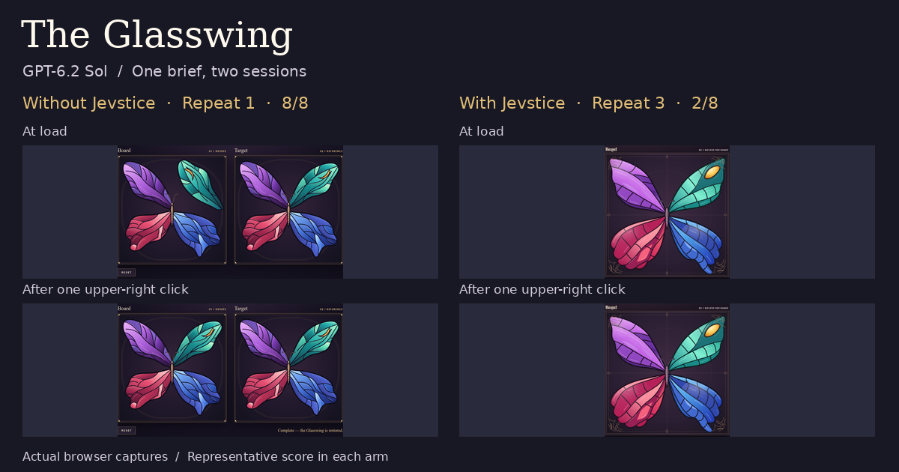
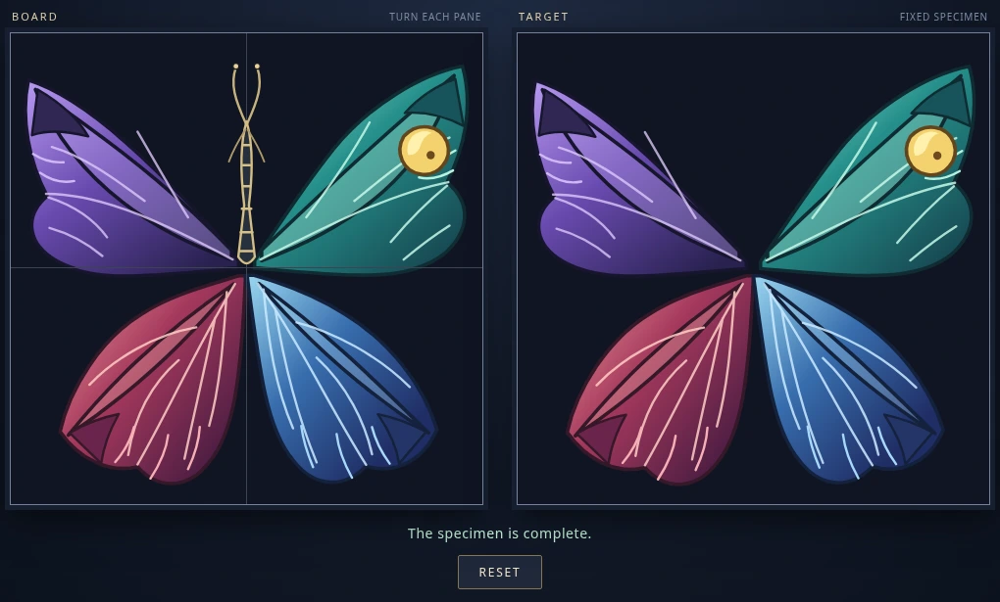
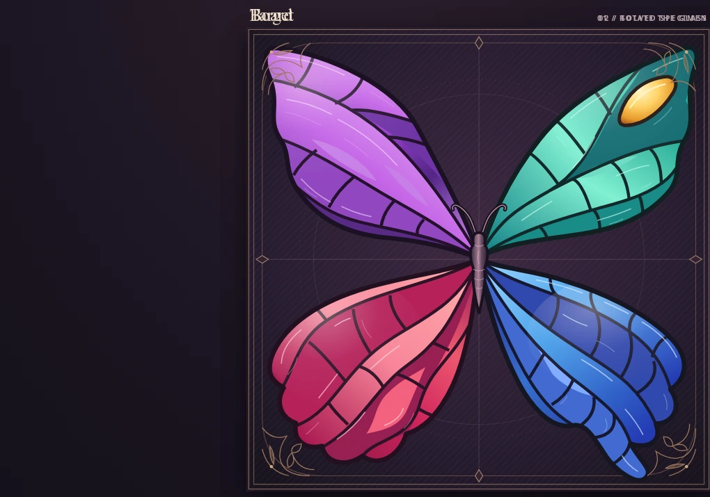
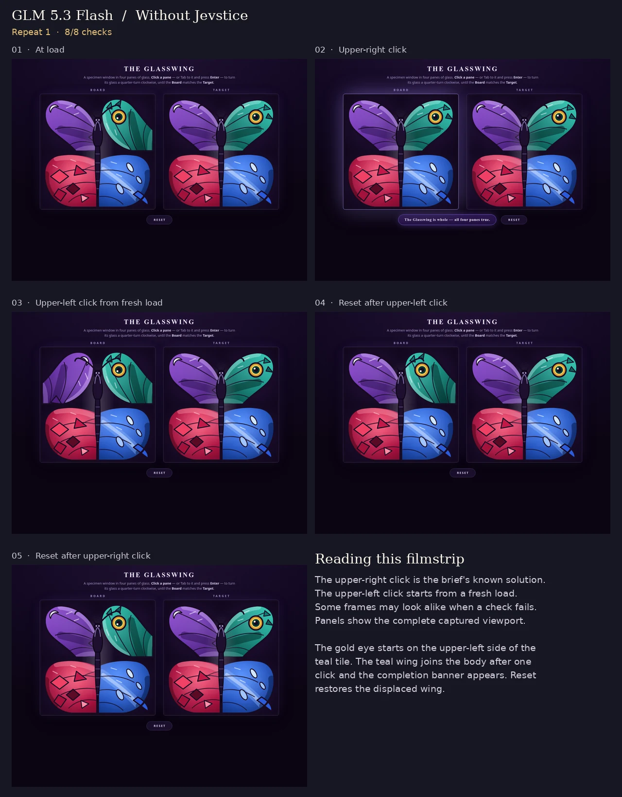
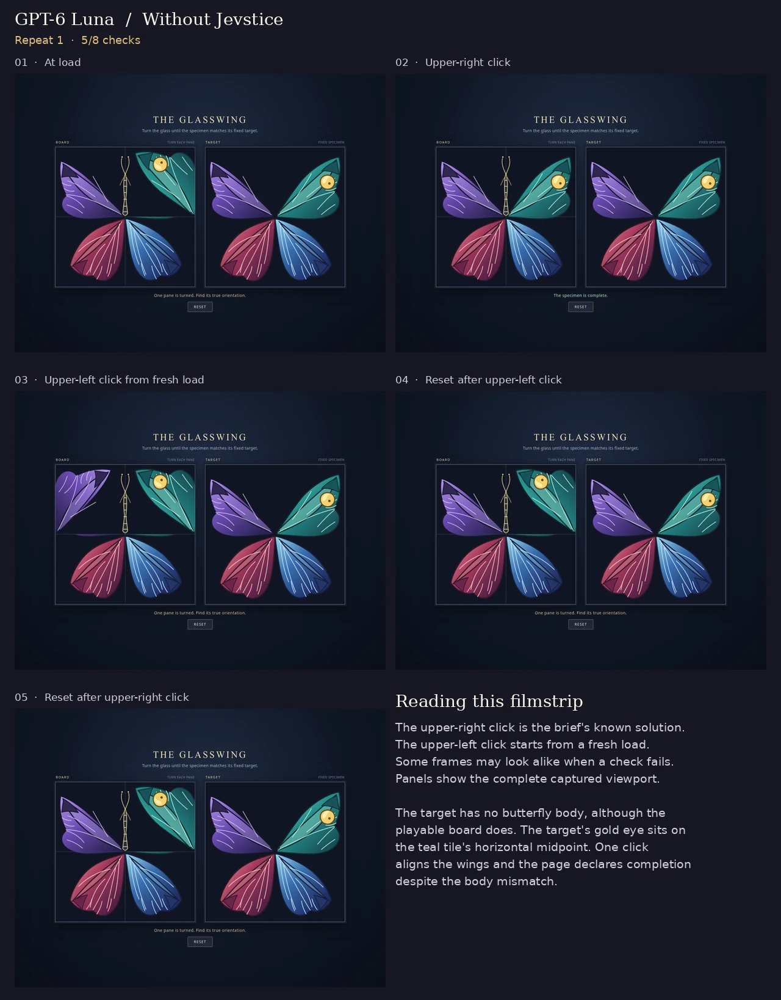
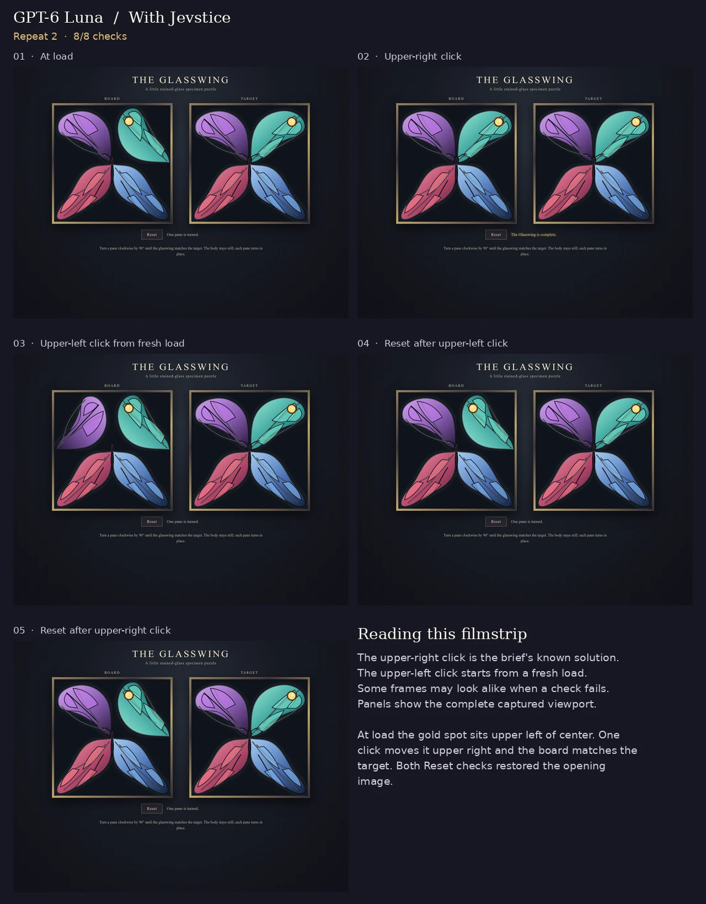
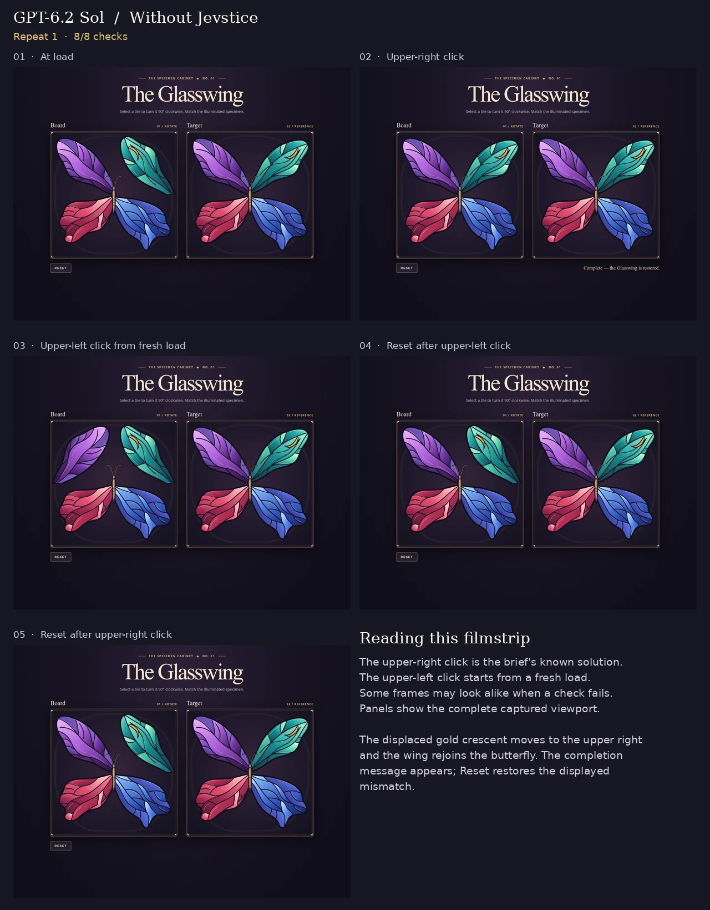
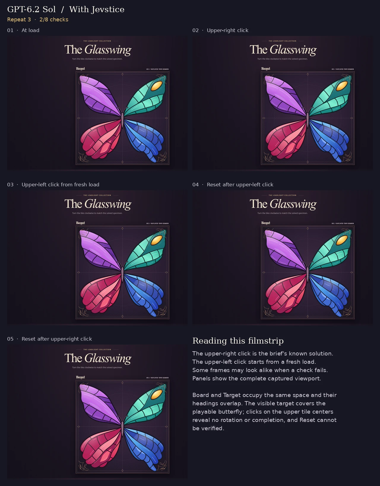

Two faults you can see


Four wings match. The page says the specimen is complete, but the target omits the body visible on the board.


The Board and Target overlap. One upper-right click leaves the visible picture unchanged and never shows completion.
These are individual runs. The comparisons below use the middle score in each arm.
Representative runs
Each column shows the run with its arm's middle score. We used the lower score when there were two deliveries and the earliest repeat among ties. The two columns can show different repeats.
GLM 5.3 Flash


The displaced wing rejoins the butterfly after one click. Reset restores the opening position.
With Jevstice: No delivery in three repeats.
GPT-6 Luna

The target has no body, and its gold eye sits at the teal tile's horizontal midpoint. The game announces completion after one click.


The displaced gold spot moves to the upper right and the board matches the target. Both Reset checks restore the opening state.
GPT-6.2 Sol


The golden crescent moves to the upper right and the wing rejoins the butterfly. Reset restores the opening position.

The target covers the board. Neither click visibly rotates a wing, and Reset cannot be verified.
All 18 results
We scored the delivered pages in isolated Chromium sessions using mouse clicks and visible evidence. Jevstice's own findings did not enter the score. The table lists each check in order: 1 passes and 0 fails.
12 of 18 runs delivered a game. The remaining 6 runs produced no index.html and have no score. In the GLM sessions with Jevstice, none of the three runs delivered a game.
| Model | Repeat | Jevstice | Score | Checks 1-8 | Browser record |
|---|---|---|---|---|---|
| GLM 5.3 Flash | 1 | Off | 8/8 | 1 1 1 1 1 1 1 1 | Filmstrip |
| GLM 5.3 Flash | 1 | On | Missing | - | - |
| GLM 5.3 Flash | 2 | Off | Missing | - | - |
| GLM 5.3 Flash | 2 | On | Missing | - | - |
| GLM 5.3 Flash | 3 | Off | Missing | - | - |
| GLM 5.3 Flash | 3 | On | Missing | - | - |
| GPT-6 Luna | 1 | Off | 5/8 | 1 0 0 0 1 1 1 1 | Filmstrip |
| GPT-6 Luna | 1 | On | 4/8 | 1 0 0 0 0 1 1 1 | Filmstrip |
| GPT-6 Luna | 2 | Off | 8/8 | 1 1 1 1 1 1 1 1 | Filmstrip |
| GPT-6 Luna | 2 | On | 8/8 | 1 1 1 1 1 1 1 1 | Filmstrip |
| GPT-6 Luna | 3 | Off | 3/8 | 0 0 0 0 0 1 1 1 | Filmstrip |
| GPT-6 Luna | 3 | On | 8/8 | 1 1 1 1 1 1 1 1 | Filmstrip |
| GPT-6.2 Sol | 1 | Off | 8/8 | 1 1 1 1 1 1 1 1 | Filmstrip |
| GPT-6.2 Sol | 1 | On | Missing | - | - |
| GPT-6.2 Sol | 2 | Off | 8/8 | 1 1 1 1 1 1 1 1 | Filmstrip |
| GPT-6.2 Sol | 2 | On | 8/8 | 1 1 1 1 1 1 1 1 | Filmstrip |
| GPT-6.2 Sol | 3 | Off | 8/8 | 1 1 1 1 1 1 1 1 | Filmstrip |
| GPT-6.2 Sol | 3 | On | 2/8 | 0 1 1 0 0 0 0 0 | Filmstrip |


What counted
- Scale. Two side-by-side 2 × 2 pictures at the same scale, one a fixed target.
- Wings. Four asymmetric glass lobes (violet, teal, ruby, cobalt) meet one vertical body.
- Gold. One gold eye or crescent above and right of the teal target tile's center.
- Start. Only the teal tile is off by one counterclockwise turn. The game is incomplete.
- Solution. One click on the teal tile rotates it clockwise and aligns all four wings.
- Completion. The upper-right click shows completion; the upper-left click from a fresh load does not.
- Wrong tile. The upper-left click rotates only that tile, clockwise. The target stays fixed.
- Reset. Reset restores the starting position and clears any completion message.
The scores describe these deliveries. Three repeats per model do not establish a general improvement or identify the cause of a difference.